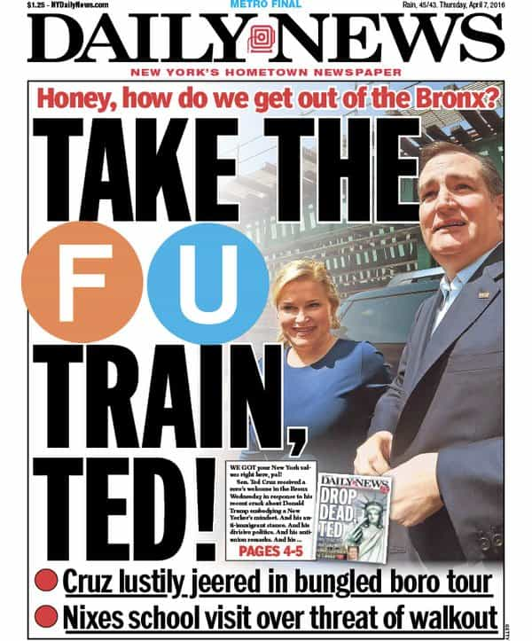

< < < Back
Will A Crushing Victory In New York Reinvigorate Donald Trump’s Campaign? – Return Of Kings
After a poor few weeks for Donald Trump’s campaign, it looks like the Trump Train is back on track in his home state of New York. The Empire State votes this Tuesday, and polling shows Trump with a massive, insurmountable lead over opponents Ted Cruz and John Kasich. Indeed, Cruz—who had been touted as the candidate to unite anti-Trump voters after his victory in Wisconsin—is polling in third behind Kasich, with neither of them likely to win any delegates (like Wisconsin, New York divvies up its delegates according to the winner of each congressional district).
Much in the same way that Wisconsin’s nicey-nice social milieu was hard for Trump to crack, there’s no state less receptive to Cruz’s revivalist preacher shtick than New York, his remarks about “New York values” notwithstanding. When Cruz and his wife Heidi tried to campaign in the Bronx last week, it was an unmitigated disaster: his town hall drew only a handful of people and his planned tour of a charter school had to be cancelled after students threatened to walk out. New Yorkers are too wise to fall for a con man like Cruz.
I’ve been on the ground in New York for the past week and having attended two of Trump’s rallies (one in Rochester, another in Albany) as well as one of Kasich’s town hall meetings (in Rochester), I can say that Trump has nothing to worry about in New York. Barring some kind of unprecedented voter fraud or meltdown on Trump’s behalf, he will run the table here, putting him in a strong position to clinch the 1,237 delegates necessary to get the Republican nomination.
New York Loves Donald Trump

Despite New York’s Democratic lean, there’s a strong base of Republican support on Long Island and in upstate, the latter of which has been hit hard by the free trade agreements that Trump decries. Cities such as Buffalo, Rochester and my hometown of Syracuse were built on manufacturing jobs, most of which have been outsourced to Mexico or China. Combined with high taxation from the Democratic-controlled state government, upstate New York has become an economic wasteland, with countless people fleeing to other states.
It’s no surprise then that the Trump rallies I attended in Rochester and Albany had a huge turnout. The Rochester rally drew about 15,000 people, with thousands more having to be turned away due to space limits. The Albany rally drew over 20,000 people, remarkable considering that the city is both the state capital (and thus quite liberal) and only has a population of about 100,000. Both events were a far cry from the Trump rally in Milwaukee I went to last week, which drew only about 1,000-1,500 people.

Not only that, Trump’s New York fans were fired up to a degree I haven’t seen at any Trump rally before, or any other candidate’s rally. At both events, whenever Trump brought up Ted Cruz, the crowd erupted into a chorus of boos and chants of “LYIN’ TED! LYIN’ TED!”, and Trump himself was far more excited and energetic then he was in Wisconsin. The number of protesters at both rallies was also small: only about a hundred each, and in Albany, they were deliberately placed in a tiny pen and massively outnumbered by Trump fans.
While John Kasich was able to get a decent crowd for his Rochester town hall—over a thousand, enough to force the community center to use an overflow room—many of them were there not out of loyalty to him but because a presidential candidate visiting Rochester was a novel experience. Given New York’s status as a blue state and the fact that it votes relatively late in the primaries, this is probably the first time in decades that national politicians care what we have to say:
Even still, Kasich is a long-shot for winning any of New York’s delegates. Beyond Trump’s home state advantage, he’s the only Republican candidate who is addressing the issues that New Yorkers care about: illegal immigration and trade. Kasich’s phony “aw, shucks” persona and conciliatory, moderate platform might have been assets in 2008 or 2012, but in a year in which voters are demanding radical change, he’s left out in the cold.
Rewriting The Electoral Map
While recent presidential elections have been fought under the assumption that large portions of America are too heavily Democratic (the Northeast and West Coast) or Republican (the South, the Mountain West) to be worth campaigning in, Donald Trump’s entry into presidential politics stands a strong chance of rewriting the electoral map. In particular, he could win states such as New York and California that haven’t gone GOP since the 1980’s.
While the paid partisans of #NeverTrump claim that the Donald will lose to Hillary Clinton in a general election landslide, they’re basing this on polls conducted well before the general election has begun. Hillary’s advantage is almost entirely due to name recognition, as shown by the fact that she’s lost huge amounts of ground to Bernie Sanders as he becomes better-known. In a general election, Trump’s charisma and populist campaign platform will give him an edge over Hillary’s hair of the dog leftism and horrendous personality.
Read More: Did The Anti-Donald Trump Riot In Chicago Help Trump Cruise To Victory On Tuesday?